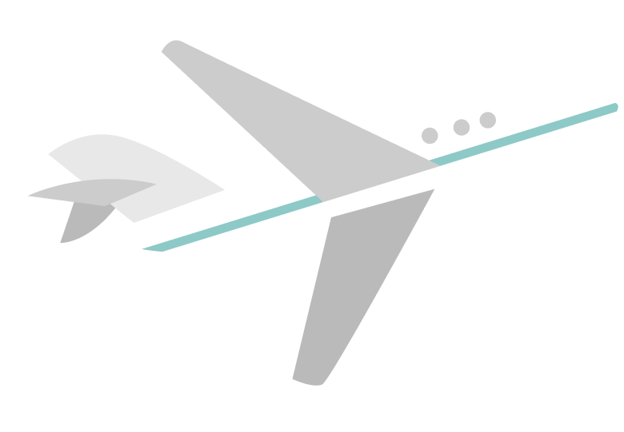
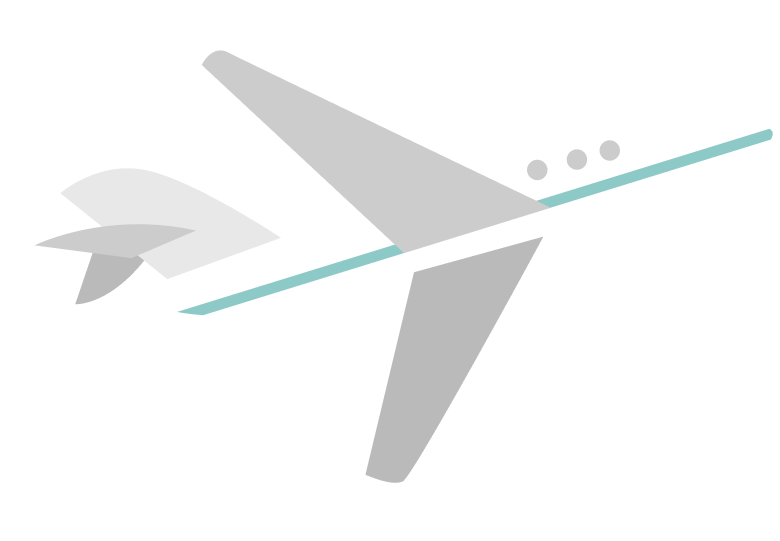

급증한 해외여행객!
코로나19 이후 한국인 해외여행 트렌드는 급격한 변화를 겪었습니다. 2019년 하반기, 해외여행객 수는 1,370만 명에 달했지만, 2020년 팬데믹으로 인해 단 46만 명으로 급감했습니다. 이후 점진적으로 회복세를 보이며, 2021년 77만 명, 2022년 520만 명을 기록하였고, 2023년에는 1,278만 명으로 다시 증가했습니다. 이 그래프는 해외여행 수요가 점진적으로 회복되며, 2019년 수준에 근접하고 있음을 보여줍니다.

세트제팅(Set-Jetting)은 영화, 드라마, 다큐멘터리 촬영지로 여행을 떠나는 트렌드로, 인기를 끌고 있습니다. 많은 사람들이 화면 속 장면을 직접 체험하고 싶어하며, 특히 인기 콘텐츠의 촬영지는 큰 관심을 끕니다. 예를 들어, 드라마 '화이트 로투스' 방영 후 이탈리아 시칠리아의 검색량이 300% 증가했습니다. 이처럼 시청한 영상 콘텐츠가 여행지 선택에 강한 영향을 미치고, 여행 계획에 영감을 주는 중요한 요소로 자리 잡고 있습니다.
미식 여행은 내년에도 큰 트렌드로 자리 잡을 전망입니다. 한국인 여행객의 59%가 음식의 유래와 식문화를 탐구하는 여행을 선호하며, 79%는 현지 전통 요리를 경험하고 싶다고 답했습니다. 이로 인해 향토 음식 체험 상품이 증가하고, 지역 공동체에 경제적 이익과 자부심을 가져다줄 것으로 기대됩니다. 또한, 호텔 다이닝 경험에 대한 관심도 증가해, 미슐랭 셰프와 특별한 메뉴를 제공하는 호텔 레스토랑이 여행의 주요 목적지로 떠오르고 있습니다.
혼행(혼자 여행)이 코로나19 이후 증가하며, 개인 맞춤형 여행이 주목받고 있습니다. 특히 MZ세대의 '갓생 살기' 트렌드와 맞물려, 혼행은 인생 경험, 감성 충족, 심신 치유 등을 목적으로 다양화되고 있습니다. 혼행족은 여유로움과 심미성을 추구하며, 자기 성찰을 중요시하는 경향을 보입니다. 이에 따라 자신의 라이프스타일에 맞춘 나노화된 여행 경험이 주요 트렌드로 자리 잡고 있습니다.
 



코로나 이후 해외여행이 급증하며 다양한 새로운 여행 트렌드가
등장했습니다. 혼자 여행하기,
Set jetting, S.O.F.T,미식여행
등이 주목받고 있습니다. 해당 글을 클릭하시면 더 자세한
한국의
여행 트렌드에 대해 알아볼 수 있습니다!

 


예산 계획 및 일정 조정:


현지 교통, 언어, 환전 정보 파악 방법
로밍 서비스 또는 현지 유심 구매 방법
홍보영상
새로운 여행지를 선택하기 전, 나라별 여행 홍보영상을 보는 건 어떨까요? 각 나라의 매력과 숨은 보석 같은 명소를 한눈에 볼 수 있는 홍보영상은 여행지를 선정하는 데 큰 도움을 줄 수 있습니다. 생생한 풍경, 독특한 문화, 그리고 다양한 체험 활동을 미리 접해보며 나에게 꼭 맞는 여행지를 찾아보세요!
도쿄
여행 방문율 1위인 일본에서 도쿄는 놓칠 수 없는 최고의 선택지입니다! 전통과 현대가 조화롭게 어우러진 이 도시는 한국인 여행자들에게 가장 사랑받는 곳 중 하나입니다. 쇼핑의 중심지인 시부야와 신주쿠, 화려한 전자상가 아키하바라에서 최신 트렌드를 경험해보세요. 센소지 같은 역사적인 명소에서 일본의 전통을 느끼고, 미슐랭 레스토랑에서 미식의 향연도 즐길 수 있습니다.
방문율 2위인 중국 여행을 계획 중이라면, 상하이는 꼭 방문해야 할 도시입니다! 동양의 파리라 불리는 이곳은 과거와 현재가 멋지게 어우러진 국제적 매력을 자랑합니다. 와이탄의 화려한 야경은 물론, 옛 정취를 간직한 유서 깊은 예원과 난징루의 쇼핑 명소도 놓칠 수 없습니다. 전통적인 중국 요리와 현대적인 글로벌 푸드까지 맛볼 수 있어 미식가들에게도 천국 같은 곳입니다.
상하이
뉴욕
미국의 심장, 뉴욕은 단순한 여행지가 아니라 꿈과 열정이 넘치는 도시입니다! 타임스퀘어의 눈부신 불빛, 센트럴파크의 여유로운 산책, 브로드웨이의 감동적인 공연은 뉴욕에서만 경험할 수 있는 특별한 순간들입니다. 세계적인 랜드마크인 자유의 여신상과 엠파이어 스테이트 빌딩도 빼놓을 수 없죠. 소호와 브루클린에서의 트렌디한 쇼핑, 다양한 글로벌 요리를 맛볼 수 있는 미식 탐방도 필수!